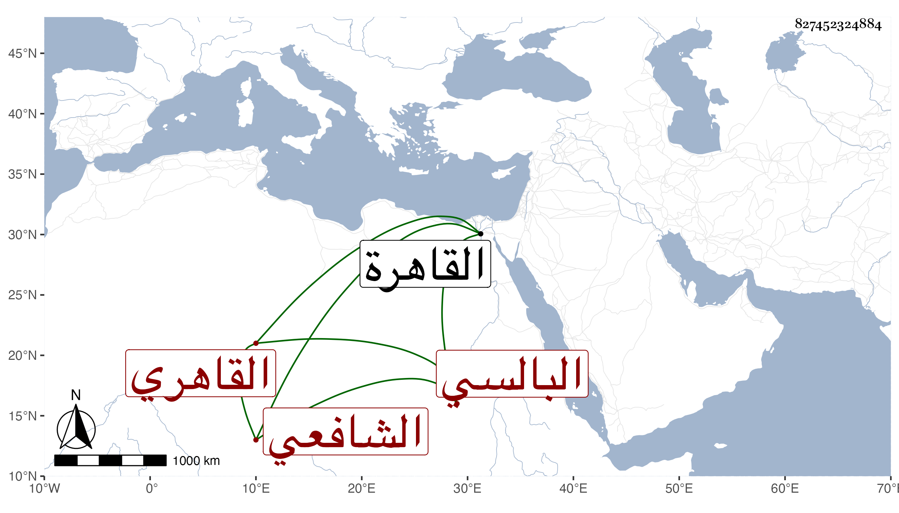

0902Sakhawi.DawLamic.ITO20230111-ara1.EIS1600.827452324884
Biography ID: 827452324884
475
عبد الرحيم بن محمد بن محمود بن محمد بن أبي الحسين بن محمود بن أبي الحسين الجمال بن القاضي الشمس البالسي الأصل القاهري الشافعي سبط السراج ابن الملقن وأخو البهاء محمد الآتي ويعرف كأبيه بالبالسي . ولد في جمادى الآخرة سنة سبع وتسعين وسبعمائة بالقاهرة ونشأ بها فحفظ القرآن والمنهاج وغيره وعرض على جماعة واشتغل يسيرا ولم ينجب لكنه سمع على الشرف بن الكويك ولا أستبعد أن يكون سمع أو حضر على جده لأمه وأنه أجاز له جماعة ، وناب في القضاء قديما وباشر في جهات كالصالحية والبرقوقية والسابقية شركة لأخيه ثم لولده وكان ساكنا جامدا . مات في ربيع الأول سنة أربع وثمانين ودفن بتربة سعيد السعداء رحمه الله وعفا عنه .
